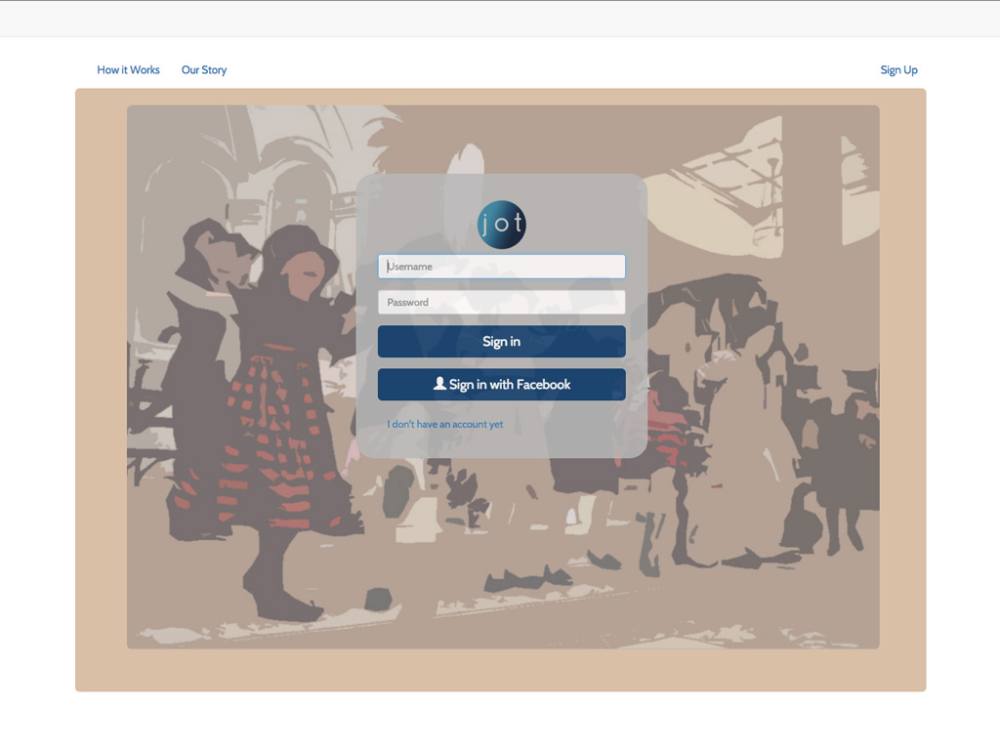

Create . . .Explore . . . Keep Learning
I am a front end developer, which means that I can work on applications and as a part of a team but I can also build YOU an awesome website. I enjoy solving problems, especially when they relate to helping people. I use HTML, CSS and Javascript and am completely delighted by websites and applications that have a unique and beautiful user experience. I'm a mom, an avid outdoorswoman, coffeephile and classically trained violinist. I do most of my internet browsing on my phone and I bet you do too so let's by all means make sure your website looks amazing on a variety of devices. Check out my recent work below ranging from some custom Wordpress to a full stack Javascript application. If you'd like to talk about your project please be in touch!
Portfolio
Eutology Learning is a program which guides recent graduates and current professionals through a process of professional discovery and awareness.
This site has a clean and easy navigation where users can quickly access tools, sign up for consultation and join the Eutology mailing list.
Elvon, Eutology’s founder needed a fast turnaround on her site because of pending speaking engagements and I was able to work with her to effectively meet her timeline goals.
I set up the site with a number of user-friendly tools that allow Elvon to keep her content fresh and gather information from clients.
I love this microsite because of the incredible imagery. I enjoyed worked with an impressive team including designers from Splash International and programming guru Al Zimmerman of Pragmatic Design Studio. The greatest challenge in realizing the design for this site was scaling images properly so that they don't take years to load and so that there are clean lines throughout the page in spite of the various image sizes.
"Wendy's flexibility and ability to overcome obstacles make her an absolute dream to work with. She is able to take a small idea and turn it into something functional and beautiful. Wendy works hard to make sure that our website works well and looks great on multiple devices."
Mrs. Stephanie McCoy, Assistant Principal
The website redesign and SEO work that I did on the Cathedral School brand moved search results from somewhere on the second page to a google first page search engine result without a single penny spent on adWords. The website is responsive--meaning that it looks great on a variety of devices ranging from iPhones to desktop screens. This is important for any business but with busy parents frequently grabbing information off their mobile phones having a really great responsive design is especially important for this website.
Another priority is easy integration of tools that parents are already familiar with such as google calendars.
Back
These wedding industry professionals are a wonderful group of passionate and creative small business owners who have established a collective to reach out to couples getting married in the Yamhill Wine region. The group is under new management and the previous website was actually hacked so when I created this site, I made it a priority to establish great security measures.
These folks are busy running their businesses and they don't have tons of time to spend maintaining a website so I focused on creating a website that is easy to update but will look great even as is.
For the Hunt Lab, I have implemented some tools such as a custom coded search box that allows visitors to search in a dictionary on the site.
Many search features one finds on websites will produce a Google search result--not limited to the information on the website where the search was instigated. Obviously this is often not ideal since you want your site visitors to STAY on your site, not leave it.
Jot
a Full Stack JavaScript Application
created by Wendy Goodwin and Natalie Ogle
 Github
GithubMany business scheduling apps exist but most are geared for large corporations. Small businesses, particularly sole proprietors have neither the budget nor the time to implement these robust systems. Jot is different because it does one thing and it does it well: offers an intuitive scheduling interface to allow clients and small businesses to easily make and keep track of appointments.